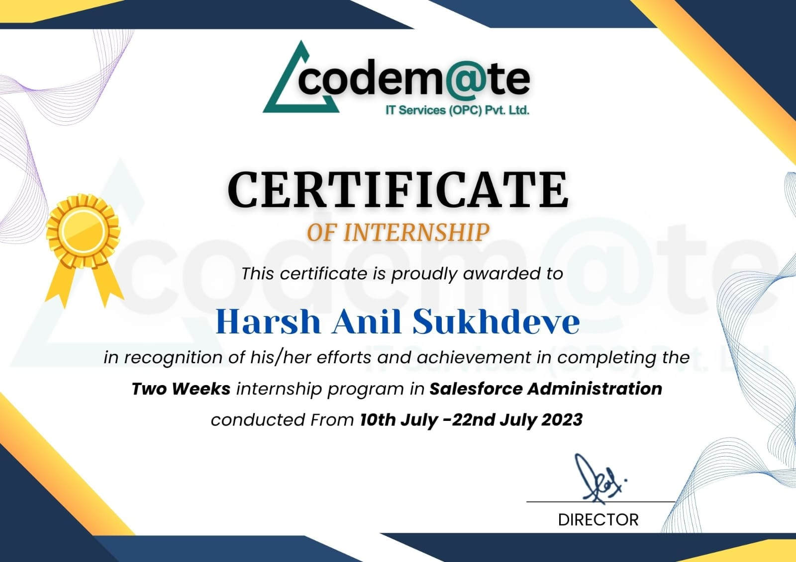

Projects and Internship
Multi-File Chatbot
Developed a PDF chat application integrating the Llama model for enhanced document-based communication and collaboration. Users can exchange messages, annotations, and feedback within PDF documents, streamlining document-centric workflows. Leveraged the advanced language understanding capabilities of the Llama model to ensure accurate and efficient interpretation of user input. Aimed to improve productivity and collaboration by providing a seamless and intuitive user experience within the Multi-file interface.
Research Paper Certificate
_page-0001.jpg)
Voice-Activated Virtual Assistant
Developed a voice-activated assistant capable of performing tasks like setting reminders, fetching information, and controlling IoT devices. Integrated SpeechRecognition for voice input processing and PyTorch for natural language understanding and intent recognition. Built a Flask-based interface to provide visual feedback and manage user settings, enhancing user experience with real-time task execution.
Prototype Video for Beach-Quest
Designed a prototype using Figma, integrating AI technology to develop an intuitive UI/UX design for Beach-Quest . Created a compelling demonstration video using Canva and Adobe Express, showcasing the chatbot's functionality and user-centric features. Aimed to revolutionize user interaction and engagement on the Ayur-Avinya website by delivering a seamless and intuitive user experience.
Prototype video
Salesforce Administration Intern - codem@te IT Services
Configured and customized Salesforce applications to align with organizational requirements, including user account management, workflow automation, and data quality initiatives. Generated insightful reports and dashboards to facilitate data-driven decision-making and provide stakeholders with actionable insights. Provided user training and support to ensure effective adoption and utilization of Salesforce, collaborating with cross-functional teams to improve efficiency and productivity.
Completion Certificate
Java Intern - S2P EDUTECH Pvt. Ltd
Gained hands-on experience in Java programming, including OOP concepts, exception handling, multi-threading, and data structures. Worked with JDBC, SQL, Git, and Maven/Gradle, and explored basic frameworks like Spring/Hibernate. Developed projects, generated reports, and contributed to collaborative development using version control systems.
Completion Certificate

Prev Next